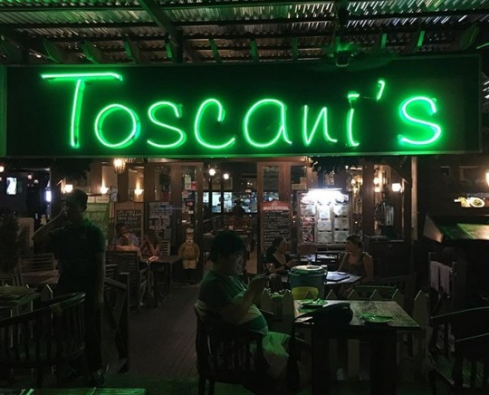

Hello!
친구와 떠나는 여행, 가족 여행, 커플 여행을 모두 아우르는 휴양지인 코타키나발루
코타키나발루는 에메랄드 빛 바다에서 즐기는 해양 액티비티부터 신비로운 외관의 이슬람사원, 반딧불투어, 그리고 세계 3대 석양으로 꼽히는 아름다운 풍경까지 모두 만날 수 있는 곳이에요.
친구와 떠나는 여행, 가족 여행, 커플 여행을 모두 아우르는 휴양지인 코타키나발루
코타키나발루는 에메랄드 빛 바다에서 즐기는 해양 액티비티부터 신비로운 외관의 이슬람사원, 반딧불투어, 그리고 세계 3대 석양으로 꼽히는 아름다운 풍경까지 모두 만날 수 있는 곳이에요.

멍알룸 섬은 코타키나발루에서 북서쪽으로 56km 떨어진 곳에 위치하고 있습니다.
멍알룸 섬은 가장 원시적인 모습을 간직하고 있는 열대의 천국과 같은 섬입니다.


말레이시아는 발전속도가 빠른 나라며 동남아시아에서 경제수준이 비교적 높은 편이다.
이 때문인지 의료, 교육, 등 사회복지가 잘 이뤄지고 있는 편이다.
코타키나발루는 해안가가 잔잔하고 넓어서 해가 그대로 바닷 물가에 반사되기 때문에 해질녘 석양이 아름다운 곳으로 유명하기에 세계 3대 선셋 명소로 불린다.
또한 코타키나발루는 약 20개 이상의 토속 종족이 있으며 언어도 다양하다.
주로 중국어, 영어이다. 말레이시아에서 두 번째로 큰 주인 ‘사바(Sabah)주’에 속해있는 코타키나발루. 코타키나발루는 이슬람 국가지만 종교가 자유롭고
다양한 인종과 함께 살아가는 나라며, 자연재해, 테러, 전쟁 등에서
자유해 안전한 여행지며, 편히게 휴양을 즐길 수 있다. 코타키나발루의 물가는 대체적으로 우리나라에 비해 저렴한 편이다.
여행하는 나라의 물가 정보를 어느정도 알아야 여행경비를 예상하고 계획할 수 있다.
코타키나발루는 다른 동남아 국가에 비해 비싼 편이지만 우리나라나 물가와 비싼 해외국가의 물가보다는 저렴한 편이다.